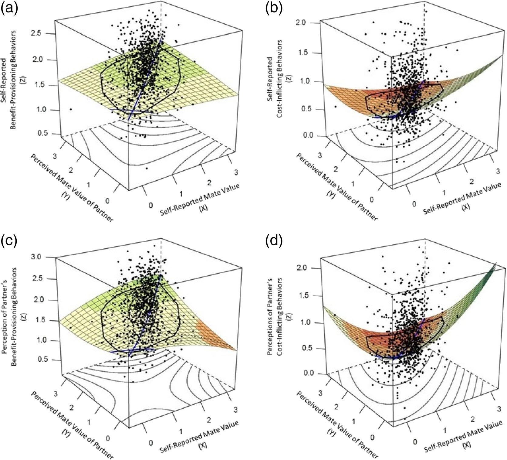

1 引言
- 配偶价值差异（mate value discrepancies）：自我报告的配偶价值和对伴侣的配偶价值的感知的差异
- 伴侣保持行为（mate retention behaviors）
1.1 配偶价值和配偶价值差异
- 配偶价值感知来源：
- 潜在伴侣的反应
- 和浪漫对手的对比
- 高配偶价值的人更可能匹配到满意的对象，大部分人需要做出妥协
- 配偶价值较为接近
- 配偶价值差异来源
- 错误感知配偶价值
- 额外的情感联系
- 欺骗
- 配偶价值随时间变化
- 配偶价值差异后果
- 不满
- 被他人吸引
- 嫉妒
- 不安全感
1.2 配偶价值差异和伴侣保持行为
- 价值相对更高者倾向于结束关系；价值相对更低者倾向于维持关系
- 伴侣保持行为：利益提供行为（benefit-provisioning behaviors）和成本施加行为（cost-inflicting behaviors）
- 高价值者倾向于利益提供行为；低价值者倾向于成本施加行为
- 巴基斯坦被试配偶价值和两种行为都正相关，可能有跨文化差异
- 利益提供行为倾向于针对高价值者；成本施加行为倾向于针对低价值者
- 配偶价值差异小的倾向于利益提供行为；配偶价值差异大的倾向于成本施加行为
- 绝对值差异
- 配偶价值高的一方倾向于哪种行为，研究结果存在差异
1.3 以前检测配偶价值差异方法的局限性
- 减法
- 6-5和8-7是一致的
- 丢失了两个价值本身的数据信息
- 调节模型部分解决问题，但还是有信息丢失
1.4 响应面分析
- 用一个面来展示X和Y不同关系和Z的关系
- line of congruence（LOC）
- X = Y这条线
- LOC斜率表示价值完全匹配者，价值高低和伴侣保持行为的关系
- LOC上的非线性表示：价值极端高和价值极端低者和伴侣保持行为的关系
- line of incongruence（LOIC）
- X = -Y这条线
- LOIC斜率表示价值存在差异者，从自身价值偏高到偏低过程中，伴侣保持行为变化
- LOIC上的非线性表示：极端偏高和极端偏低者，伴侣保持行为的差异性
- 不足：不能检验差异不对称性（asymmetric discrepancies）
- 二次项默认曲线是对称的，无法检验自身价值高和自身价值更低，相同变化维度上，保留行为的变化是否有差异
- 使用三次响应面
1.5 概述和预测
- 补充传统配偶价值差异算法进行对比
- 假设1：配偶价值一致时，两种行为都和配偶价值负向相关
- 假设2：配偶价值差异和伴侣保持行为存在不对称相关
- 自身配偶价值相对更低的被试两种行为增加
- 自身配偶价值相对更高的被试感知对方两种行为增加
2 方法
2.1 被试和程序
- 1083名美国中西部大学本科生
- 共招募1220人，136名因注意力等问题被排除；1名数据异常被排除（RSA对异常数据敏感）
- 190男、893女；20.33 ± 3.43岁；83%白人；关系时长2.36年；86%约会中
- 自我报告配偶价值、感知伴侣配偶价值、自我报告伴侣保持行为、感知伴侣伴侣保持行为
- 还进行了其他和本研究无关的问卷
2.2 测量
- 自我报告配偶价值：Mate Value Inventory，19题，-3到+3
- 感知伴侣配偶价值：Mate Value Inventory改编
- 传统配偶价值差异：相减
- 自我报告伴侣保持行为：Mate Retention Inventory-Short Form
- 利益提供行为：16题，0到3
- 成本施加行为：22题，0到3
- 感知伴侣伴侣保持行为：Mate Retention Inventory-Short Form改编
2.3 数据分析
- 建构4个三次响应面分析模型
- 关注响应面，而不是具体哪个回归系数
3 结果
| Variable | 1 | 2 | 3 | 4 | 5 | 6 | 7 |
|---|---|---|---|---|---|---|---|
| 1. Self-reported mate value | – | ||||||
| 2. Perceived mate value of partner | .67** | – | |||||
| 3. Traditional mate value discrepancy | .36** | −.45** | – | ||||
| 4. Self-reported benefit-provisioning | .12** | .11** | .00 | – | |||
| 5. Self-reported cost-inflicting | −.17** | −.25** | .11** | .36** | – | ||
| 6. Perceptions of partner’s benefit-provisioning | .17** | .22** | −.08* | .65** | .25** | – | |
| 7. Perceptions of partner’s cost-inflicting | −.14** | −.26** | .16** | .32** | .76** | .30** | – |
| Mean | 1.82 | 2.10 | −0.29 | 1.80 | 0.70 | 1.77 | 0.67 |
| Standard deviation | 0.66 | 0.69 | 0.55 | 0.39 | 0.41 | 0.49 | 0.46 |
| Skewness | −0.68 | −0.96 | −0.04 | −0.31 | 0.70 | −0.31 | 0.85 |
| Kurtosis | 0.37 | 0.76 | 2.73 | 0.32 | 0.18 | −0.09 | 0.18 |
- 表 1 表明：
- 两种配偶价值和利益提供行为有小到中的正相关；和成本施加行为有小到中的负相关
- 传统配偶价值差异和利益提供行为有很小的负相关（和自我报告的不显著）；和成本施加行为有微弱的正相关
- 48%配偶价值相似、44%更低、8%更高
- 本身就不对称，建议使用三次响应面分析

3.1 配偶价值一致和伴侣保持行为的关联
- 两种成本施加行为（自我和伴侣）在LOC上斜率都显著为负
- 两种利益提供行为（自我和伴侣）在LOC上斜率都不显著
- 感知伴侣利益提供行为在LOC上出现曲线效应
- 认为价值更高的个体展示了最高的感知伴侣利益提供行为
- 配偶价值都更高时，上升速率更快
3.2 配偶价值差异和伴侣保持行为的关联
- 两种成本施加行为在LOIC上出现曲线效应
- 认为自己价值更高的方向的上升速率高于认为自己价值更低的方向
4 讨论
- 感知双方配偶价值都更低时，只有成本施加行为显著增加，利益提供行为不显著
- 低价值个体认为自己无法提供利益
- 感知双方配偶价值都更高时，感知伴侣利益提供行为上升更快，即最高点在价值更高处
- 高价值个体常使用利益提供策略，感知到对方如此
- 认为自己的配偶价值远高于伴侣的个体，报告的成本施加行为水平最高
- 配偶价值相对伴侣更低的个体，倾向于成本施加行为，被感知到了
- 认为自己价值高太多，有更多不满，倾向于成本施加行为
- 对伴侣成本施加行为的回应
- 小样本结果，需要谨慎解释
- 创新：新方法、整体价值
- 不足：认为自身配偶价值高于伴侣的个体占比较低、女性和白人为主、自我价值评价全来自主观评价
参考文献
Young, G., Zeigler-Hill, V., & Ross, J. (2024). Mate value discrepancies and mate retention behaviors: A cubic response surface analysis [Journal Article]. Personal Relationships, 31(3), 676–694. https://doi.org/10.1111/pere.12550